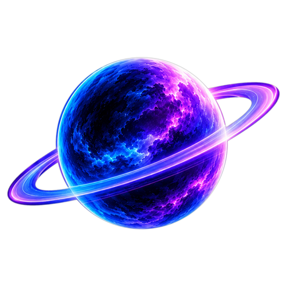

Tous tes jeux Astro Labs, au même endroit
Le launcher installe tes jeux, les garde à jour et les lance en un clic.
Télécharger pour Windows
Installer en trois étapes
-
Télécharge le launcher
Le fichier
AstroLabs_0.1.1_x64-setup.exe
arrive dans ton dossier Téléchargements. -
Ouvre le fichier
Windows peut afficher cet avertissement, car le launcher est récent. Clique sur
Informations complémentaires
, puis surExécuter quand même
. -
Connecte-toi
Crée ton compte avec ton adresse e-mail, ou connecte-toi. Le launcher se met ensuite à jour tout seul.